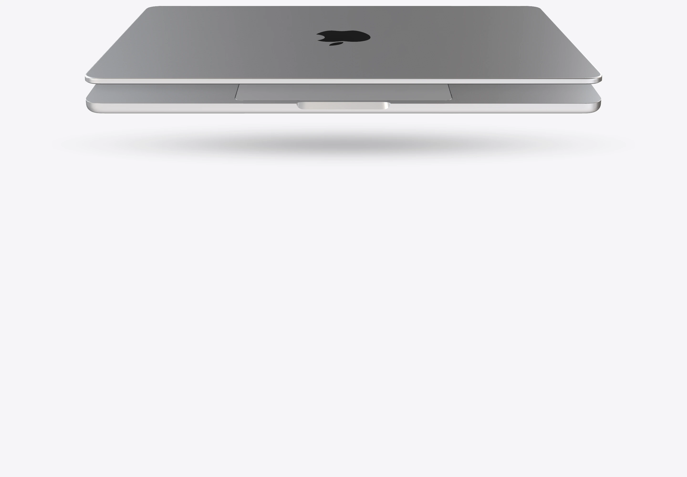
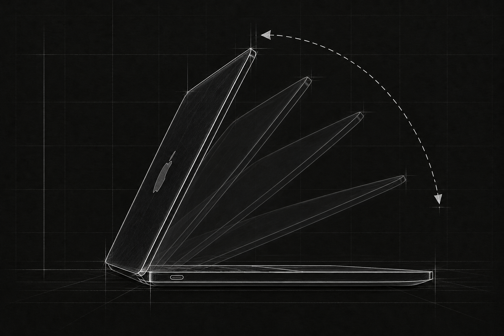
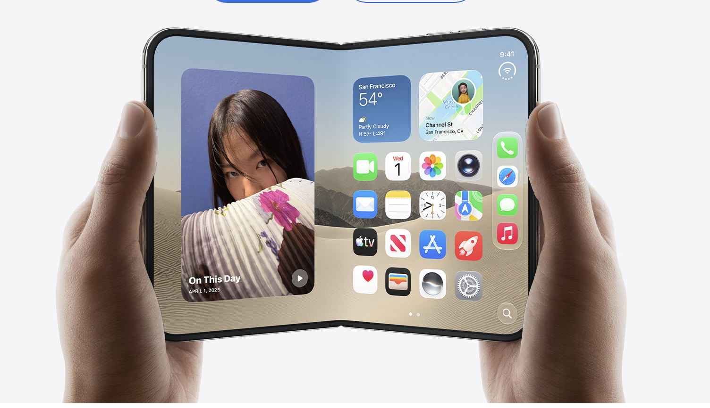
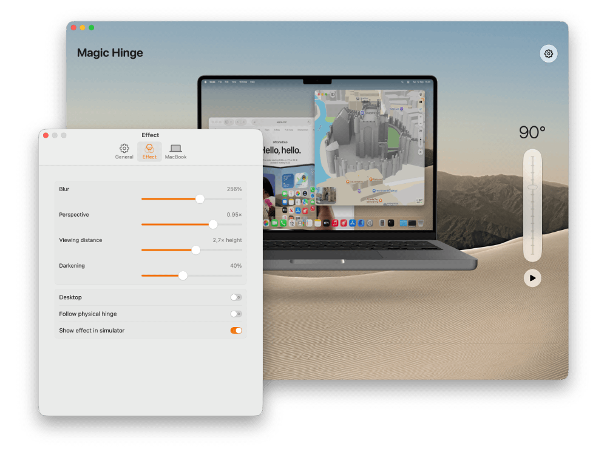
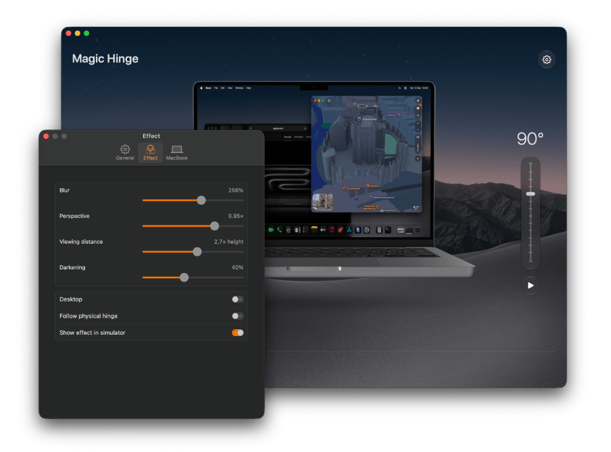

Craig mode. Activated.
Add the addictive iPhone Duo animation to your MacBook, free of charge. It has absolutely no business being this satisfying.
A completely unnecessary upgrade to opening your laptop.
Brings the iPhone Duo screen animation to your MacBook.
Magic Hinge 0.9 Beta is being prepared.
Public beta · Free & open source · Apple Notarized · macOS 14.2 or later

WARNING: This utility may cause an irresistible urge to open and close your MacBook repeatedly. We accept no responsibility for any resulting wear and tear on your MacBook’s hinge.
Add the addictive iPhone Duo animation to your MacBook, free of charge. It has absolutely no business being this satisfying.

The iPhone Duo screen animation has absolutely no business being so satisfying. That's why we brought it to the Mac.

Finished working? Shut the lid and enjoy one last little moment of delight. Almost makes you want to finish work early.
MAKE YOURSELF AT HOME
Open the disk image and drag Magic Hinge into Applications. Or use Homebrew:
brew install --cask roelvangils/tap/magic-hingeThe app speaks English and Dutch. Screen Recording is optional; the simulator works with an example image. Models download directly from Apple and remain available offline after downloading.
This is an early public beta. macOS 14.2 is the deployment target; testing on that exact version and the full hardware, permissions and VoiceOver test matrix are still pending. Report a bug on GitHub.
The effect clears on sleep, screen lock and sensor loss. It does not prevent sleep or draw over the secure login screen. Update checks are optional; automatic downloads and installation are off.
Automatic hinge control depends on the sensor available in your Mac, detected at runtime. The simulator remains available when no sensor is readable.
Magic Hinge by Roel Van Gils. Original code under the MIT license. Apple supplies the original 3D models; Apple’s terms apply. Wallpapers by Basic Apple Guy, used with permission. Studio lighting from Poly Haven (CC0). Updates by Sparkle; permission guidance by PermissionFlow.
Third-party assets are excluded from the code’s MIT license. See the complete credits and terms.

